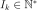
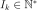
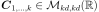
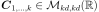

GaussianProcess¶
(Source code, png, hires.png, pdf)
{kind=link}
{kind=link}
-
class
GaussianProcess(*args)¶ Gaussian processes.
- Available constructor:
GaussianProcess(trend, covarianceModel, mesh)
GaussianProcess(covarianceModel, mesh)
- Parameters
- trend
TrendTransform Trend function of the process. By default the trend is null.
- covarianceModel
CovarianceModel Temporal covariance model
 .
.- mesh
Mesh Mesh
 over which the domain
over which the domain  is discretized.
is discretized.
- trend
Notes
GaussianProcess creates the processes,
 where
where  ,
from their temporal covariance function
,
from their temporal covariance function
 , which writes, in
the stationary case: . A
process is normal, if all its finite dimensional joint distributions are
normal (See the method
, which writes, in
the stationary case: . A
process is normal, if all its finite dimensional joint distributions are
normal (See the method isNormal()for a detailed definition).The gaussian processes may have a trend: in that case, the Gaussian process is the sum of the trend function and a zero-mean Gaussian process.
Examples
>>> import openturns as ot >>> ot.RandomGenerator.SetSeed(0) >>> # Default dimension parameter to evaluate the model >>> defaultDimension = 1 >>> # Amplitude values >>> amplitude = [1.0]*defaultDimension >>> # Scale values >>> scale = [1.0]*defaultDimension >>> # Second order model with parameters >>> myModel = ot.AbsoluteExponential(scale, amplitude) >>> # Time grid >>> tmin = 0.0 >>> step = 0.1 >>> n = 11 >>> myTimeGrid = ot.RegularGrid(tmin, step, n) >>> size = 100 >>> myProcess = ot.GaussianProcess(myModel, myTimeGrid)
- Attributes
thisownThe membership flag
Methods
Accessor to the object’s name.
Get a continuous realization.
Get the covariance model.
Get the description of the process.
getFuture(*args)Prediction of the
 future iterations of the process.
future iterations of the process.getId()Accessor to the object’s id.
Get the dimension of the domain
.getMarginal(indices)Get the
 marginal of the random process.
marginal of the random process.getMesh()Get the mesh.
getName()Accessor to the object’s name.
Get the dimension of the domain
.Get a realization of the process.
getSample(size)Get
 realizations of the process.
realizations of the process.Accessor to the object’s shadowed id.
Get the time grid of observation of the process.
getTrend()Get the trend function.
Accessor to the object’s visibility state.
hasName()Test if the object is named.
Test if the object has a distinguishable name.
Test whether the process is composite or not.
isNormal()Test whether the process is normal or not.
Test whether the process is stationary or not.
Tell if the process is trend stationary or not.
setDescription(description)Set the description of the process.
setMesh(mesh)Set the mesh.
setName(name)Accessor to the object’s name.
setSamplingMethod(samplingMethod)Set the used method for getRealization.
setShadowedId(id)Accessor to the object’s shadowed id.
setTimeGrid(timeGrid)Set the time grid of observation of the process.
setVisibility(visible)Accessor to the object’s visibility state.
-
__init__(*args)¶ Initialize self. See help(type(self)) for accurate signature.
-
getClassName()¶ Accessor to the object’s name.
- Returns
- class_namestr
The object class name (object.__class__.__name__).
-
getContinuousRealization()¶ Get a continuous realization.
- Returns
- realization
Function According to the process, the continuous realizations are built:
either using a dedicated functional model if it exists: e.g. a functional basis process.
or using an interpolation from a discrete realization of the process on
: in dimension  , a linear interpolation and in
dimension
, a linear interpolation and in
dimension  , a piecewise constant function (the value at a
given position is equal to the value at the nearest vertex of the mesh of
the process).
, a piecewise constant function (the value at a
given position is equal to the value at the nearest vertex of the mesh of
the process).
- realization
-
getCovarianceModel()¶ Get the covariance model.
- Returns
- covarianceModel
CovarianceModel Temporal covariance model
.
- covarianceModel
-
getDescription()¶ Get the description of the process.
- Returns
- description
Description Description of the process.
- description
-
getFuture(*args)¶ Prediction of the
future iterations of the process.- Parameters
- stepNumberint,

Number of future steps.
- sizeint,
 , optional
, optional Number of futures needed. Default is 1.
- stepNumberint,
- Returns
- prediction
ProcessSampleorTimeSeries - future iterations of the process.
If
 , prediction is a
, prediction is a TimeSeries. Otherwise, it is aProcessSample.
- prediction
-
getId()¶ Accessor to the object’s id.
- Returns
- idint
Internal unique identifier.
-
getInputDimension()¶ Get the dimension of the domain
.- Returns
- nint
Dimension of the domain
: .
-
getMarginal(indices)¶ Get the
marginal of the random process.- Parameters
- kint or list of ints

Index of the marginal(s) needed.
- kint or list of ints
- Returns
- marginals
Process Process defined with marginal(s) of the random process.
- marginals
-
getName()¶ Accessor to the object’s name.
- Returns
- namestr
The name of the object.
-
getOutputDimension()¶ Get the dimension of the domain
.- Returns
- dint
Dimension of the domain
.
-
getRealization()¶ Get a realization of the process.
- Returns
- realization
Field Contains a mesh over which the process is discretized and the values of the process at the vertices of the mesh.
- realization
-
getSample(size)¶ Get
realizations of the process.- Parameters
- nint,

Number of realizations of the process needed.
- nint,
- Returns
- processSample
ProcessSample - realizations of the random process. A process sample is a
collection of fields which share the same mesh
 .
.
- processSample
-
getShadowedId()¶ Accessor to the object’s shadowed id.
- Returns
- idint
Internal unique identifier.
-
getTimeGrid()¶ Get the time grid of observation of the process.
- Returns
- timeGrid
RegularGrid Time grid of a process when the mesh associated to the process can be interpreted as a
RegularGrid. We check if the vertices of the mesh are scalar and are regularly spaced in but we don’t check if the connectivity of the mesh is conform
to the one of a regular grid (without any hole and composed of ordered
instants).
but we don’t check if the connectivity of the mesh is conform
to the one of a regular grid (without any hole and composed of ordered
instants).
- timeGrid
-
getTrend()¶ Get the trend function.
- Returns
- trend
TrendTransform Trend function.
- trend
-
getVisibility()¶ Accessor to the object’s visibility state.
- Returns
- visiblebool
Visibility flag.
-
hasName()¶ Test if the object is named.
- Returns
- hasNamebool
True if the name is not empty.
-
hasVisibleName()¶ Test if the object has a distinguishable name.
- Returns
- hasVisibleNamebool
True if the name is not empty and not the default one.
-
isComposite()¶ Test whether the process is composite or not.
- Returns
- isCompositebool
True if the process is composite (built upon a function and a process).
-
isNormal()¶ Test whether the process is normal or not.
- Returns
- isNormalbool
True if the process is normal.
Notes
A stochastic process is normal if all its finite dimensional joint distributions are normal, which means that for all
 and
, with
and
, with  , there is
, there is
 and
 such that:
and
 such that:
where
 ,
,
 and
and
 and
and
 is the symmetric matrix:
is the symmetric matrix:
A Gaussian process is entirely defined by its mean function
 and its
covariance function (or correlation function
and its
covariance function (or correlation function  ).
).
-
isStationary()¶ Test whether the process is stationary or not.
- Returns
- isStationarybool
True if the process is stationary.
Notes
A process
 is stationary if its distribution is invariant by
translation:
is stationary if its distribution is invariant by
translation:  ,
,
 ,
,
 , we have:
, we have:
-
isTrendStationary()¶ Tell if the process is trend stationary or not.
- Returns
- isTrendStationarybool
True if the process is trend stationary.
-
setDescription(description)¶ Set the description of the process.
- Parameters
- descriptionsequence of str
Description of the process.
-
setName(name)¶ Accessor to the object’s name.
- Parameters
- namestr
The name of the object.
-
setSamplingMethod(samplingMethod)¶ Set the used method for getRealization.
Available parameters are :
0 : Cholesky factor sampling (default method)
1 : H-Matrix method (if H-Mat available)
2 : Gibbs method (in dimension 1 only)
- Parameters
- samplingMethodint
Fix a method for sampling.
-
setShadowedId(id)¶ Accessor to the object’s shadowed id.
- Parameters
- idint
Internal unique identifier.
-
setTimeGrid(timeGrid)¶ Set the time grid of observation of the process.
- Returns
- timeGrid
RegularGrid Time grid of observation of the process when the mesh associated to the process can be interpreted as a
RegularGrid. We check if the vertices of the mesh are scalar and are regularly spaced in but we don’t check if the connectivity of the mesh is conform
to the one of a regular grid (without any hole and composed of ordered
instants).
- timeGrid
-
setVisibility(visible)¶ Accessor to the object’s visibility state.
- Parameters
- visiblebool
Visibility flag.
-
thisown¶ The membership flag